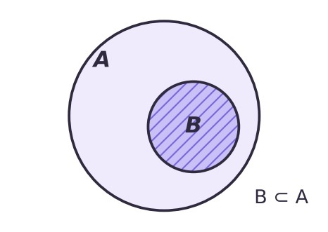
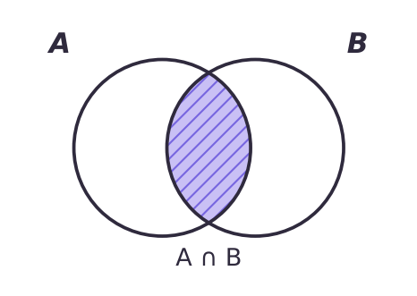
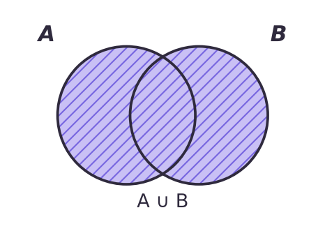
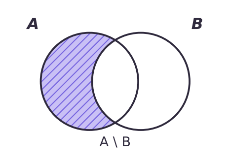
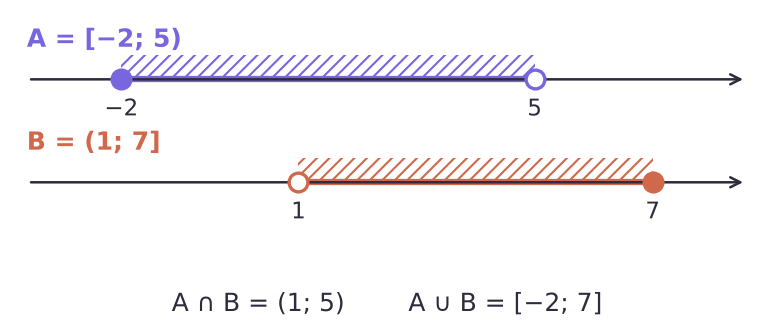

Элементы, подмножества, операции ∩, ∪, \
a ∈ A — «a принадлежит A»; a ∉ A — «не принадлежит»
N ⊂ Z ⊂ Q ⊂ R · 0 ∉ N
{1, 2, 3, 4} — перечисление · {x | x = 3n, n ∈ N} — свойство · ∅ — пустое
∅ ⊂ A · A ⊂ A · A ⊂ B и B ⊂ A ⇒ A = B




A = {1, 2, 3, 4, 6, 12}, B = {1, 2, 3, 6, 9, 18}
A = [−2; 5), B = (1; 7]

И диаграммы Эйлера к № 1.16